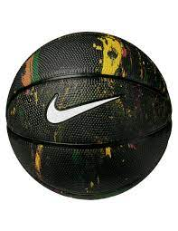
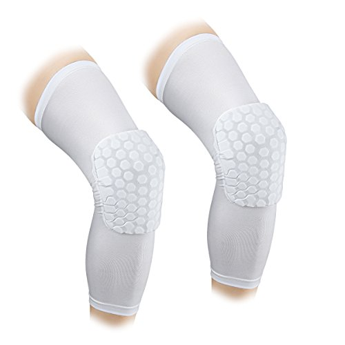
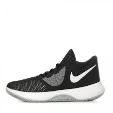
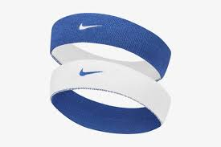
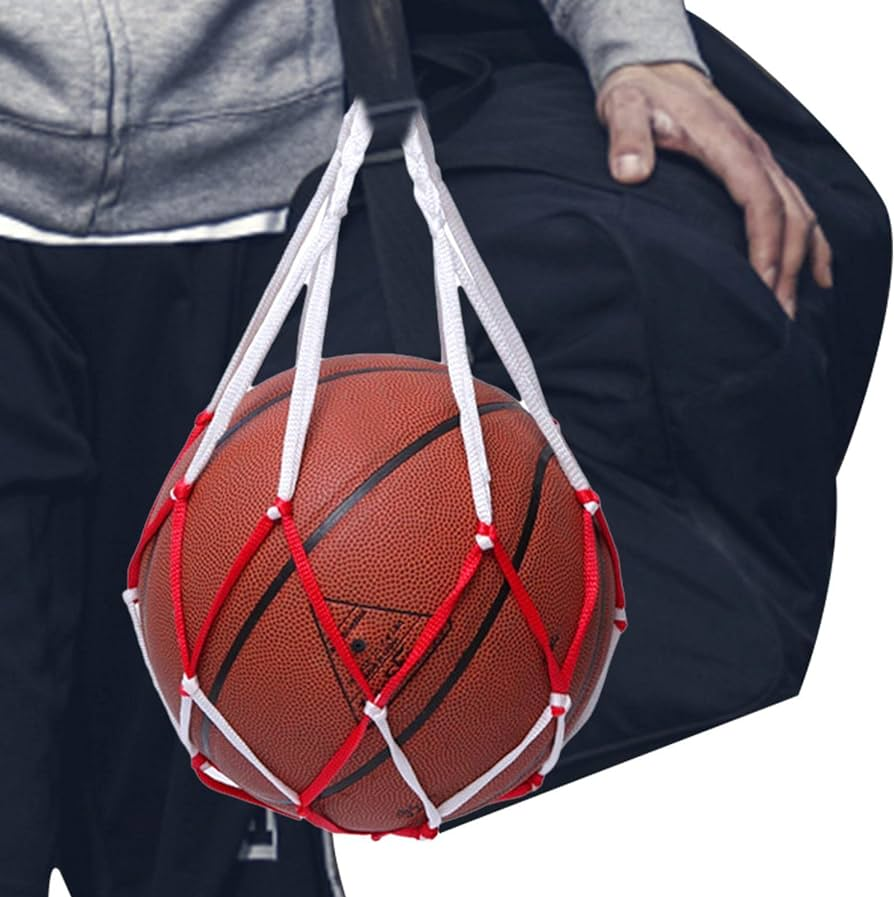

El baloncesto, o basquetbol, en la actualidad es un deporte ampliamente popular y se juega en todo el mundo. Es conocido por su ritmo rápido, emocionantes jugadas y un gran seguimiento de aficionados en todo el mundo.
El primer partido de baloncesto se jugó en enero de 1892 en el gimnasio de la YMCA de Springfield. El juego original involucraba dos equipos de nueve jugadores cada uno.
A medida que el baloncesto ganó popularidad, se realizaron cambios en las reglas del juego. Por ejemplo, se redujo el número de jugadores en cada equipo de nueve a cinco. En 1936, el baloncesto se convirtió en un deporte olímpico en los Juegos de Berlín.
La National Collegiate Athletic Association (NCAA) desempeñó un papel fundamental en el desarrollo del baloncesto universitario en los Estados Unidos. En 1946, se fundó la National Basketball Association (NBA), que se convirtió en la principal liga profesional de baloncesto en el mundo.
El baloncesto ha visto el surgimiento de muchos jugadores icónicos, como Michael Jordan, Magic Johnson, Larry Bird, Kareem Abdul-Jabbar, LeBron James y muchos otros. Cada uno de estos jugadores ha dejado su huella en la historia del baloncesto.
El baloncesto se ha convertido en un deporte global con numerosas ligas y campeonatos en todo el mundo. La Fédération Internationale de Basketball (FIBA) es la organización que rige el baloncesto a nivel internacional, y los Juegos Olímpicos continúan siendo uno de los eventos deportivos más destacados para el baloncesto.
Aqui tienes una lista de algunos articulos esenciales para practicar el deporte:
| Nombre | Descripción | Precio | Imagen |
|---|---|---|---|
| Balon | El balón se utiliza en el baloncesto como la pieza central del juego. Los jugadores lo pasan, driblan y encestan en el aro para marcar puntos. Su diseño permite un rebote consistente y un agarre adecuado para realizar pases y tiros precisos. | $800 |  |
| Rodilleras pierna completa | Las rodilleras para pierna completa son un equipo de protección esencial en el baloncesto. Están diseñadas para brindar soporte y amortiguación a las piernas, especialmente a las rodillas. Ayudan a prevenir lesiones, contusiones y abrasiones al chocar con otros jugadores o caer al suelo durante el juego. | $900 |  |
| Tenis | Los tenis de voleibol suelen tener suelas de goma que ofrecen tracción en superficies de cancha y una amortiguación adecuada para proteger las articulaciones de los jugadores durante saltos y movimientos intensos. | $2500 |  |
| Cinta para el pelo | La cinta para el pelo es un accesorio utilizado por algunos jugadores para mantener su cabello en su lugar durante el juego. Puede ayudar a mantener una visión clara y evitar que el cabello interfiera en el rendimiento. | $255 |  |
| Bolsa de baloncesto | La bolsa para balón es un elemento práctico para transportar y almacenar el balón de baloncesto de manera segura. Facilita el transporte a los entrenamientos y partidos, protege el balón de daños y permite mantenerlo inflado y listo para su uso en cualquier momento. | $800 |  |